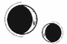

CAPÍTULO 71
Julius 1789
Helena se estaba corroyendo como el metal: se disolvía, se descomponía y se partía en pedazos. En su pecho había florecido un dolor constante desde que había empezado a desmoronarse.
Tenía muchas cosas que decirle a Kaine, pero ni siquiera era capaz de pensar en ellas sin que se le cerrara la garganta, el corazón se le desbocara y le entraran ganas de llorar. Nunca había sido una persona de lágrima fácil, pero el embarazo parecía haberla cambiado en ese aspecto. La cuenta atrás la estaba destrozando poco a poco.
Un día, en vez de echarse a llorar, se encaró con Kaine.
Su plan era estúpido y egoísta. No era justo que él muriera y ella se viera obligada a seguir adelante. Si la hubiera dejado participar en el rescate de Lila, no habrían acabado así. Si hubiera confiado en ella, si no hubiera sido tan controlador, si hubiese accedido a colaborar con ella, la situación habría sido muy distinta. Era todo culpa suya.
Él la dejó hablar hasta que se quedó sin aliento y se llevó una mano al pecho tratando de obligar al corazón a recuperar su ritmo. Cuando intentó ayudarla, ella le apartó la mano con brusquedad.
Más tarde, después de que su padre lo llamara y Helena se quedara revolcándose en su rabia, comprendió que Kaine estaba haciendo todo aquello a propósito.
Conocía bien los caminos destructivos por los que la mente de ella tendía a desviarse. Desde que había llegado a Puntaférreo, Kaine se había esforzado por provocarla y llevarle la contraria para hacer que reaccionara. Le había dado un objetivo. Odiarlo la ayudaba a ser menos autodestructiva.
Y, si en ese momento se enfadaba con él, su partida sería mucho más fácil para ambos.
Helena se tragó su rabia, decidida a no dejarse manipular, pero sus emociones le carcomieron las entrañas como si fueran un veneno.
Un camión trajo una nueva tanda de prisioneros y Kaine volvió a desaparecer.
Helena no podía evitar preguntarse cómo sería su relación con su padre. Ambos mostraban un evidente desprecio el uno por el otro que ni siquiera intentaban disimular. Atreus parecía encontrar siempre algún motivo para odiar a su hijo, pero tampoco dejaba de buscar razones para necesitarlo. Por otro lado, Kaine culpaba a su padre por la tragedia que había vivido su madre, pero hasta el momento le había perdonado la vida, pese a ser uno de los objetivos más débiles entre los inmarcesibles.
Helena estaba sentada en la cama, entumecida por el desaliento, cuando la puerta se abrió. Se le heló la sangre en las venas al levantar la vista y ver que uno de los guardias uniformados del camión había entrado en su habitación.
El intruso se quitó el gorro que le cubría la cabeza y Helena descubrió que era Ivy.
Se quedó mirándola, sorprendida pero a la vez entumecida, y la otra chica le ofreció una sonrisa vacilante.
—No sabes lo mucho que me ha costado llegar hasta ti.
Helena no se movió.
—¿Qué haces aquí?
—He venido a rescatarte.
Tan pronto como dijo eso, un chirrido metálico voló por la estancia. La puerta se combó y quedó encajada en el marco. Ivy se dio la vuelta e intentó abrirla, pero la estructura no cedió ni un milímetro. Volvió a girarse y avanzó hacia Helena.
—No —se apresuró a decir ella poniéndose de pie—. La última vez que alguien vino y se me acercó demasiado, Kaine le rompió todos los huesos del cuerpo sin siquiera estar presente.
Ivy se quedó inmóvil, mirándola como si fuera un animal enjaulado. Por muy difícil que le hubiera resultado llegar hasta Helena, estaba claro que no se había parado demasiado a trazar un buen plan.
—¿Por qué estás aquí? —le preguntó Helena mientras la estudiaba de cerca. Era muy muy joven, apenas una chiquilla—. Sabes que llevo prisionera en este lugar desde el año pasado. ¿Por qué has venido ahora?
Ivy retrocedió y rodeó a Helena en un arco amplio para acercarse a la ventana y sacudirla con violencia, intentando romper el cristal. Debía de haber perdido su toque, aunque a lo mejor había actuado de forma demasiado impulsiva. Tal vez había calculado mal y esperaba infiltrarse con mucha más facilidad en Puntaférreo.
—Pensaba que estabas aquí para que te interrogaran. No sabía que el Sumo Inquisidor iba a… —sus ojos volaron hasta el vientre de Helena— hacerte eso.
Helena resopló.
—Se lo han hecho a muchas chicas en la Central. ¿Por qué te preocupas por mí?
Ivy se quedó quieta.
—A Sofia le caías bien. Quería que me hiciera amiga tuya. Siempre me decía que debería parecerme más a ti, que debería ayudar a los demás, pero yo nunca la escuché.
—Pues yo no quiero ser tu amiga —dijo Helena con frialdad—. Tu hermana está muerta. Nos traicionaste a todos por un cadáver.
—¡Ya lo sé! —exclamó Ivy con un grito cargado de tristeza mientras se giraba para mirar a Helena con el rostro pálido y los ojos brillantes—. Lo sé, pero no pude…, no fui capaz de lidiar con su muerte. Pensé… —Se le descompuso el rostro—. Me dije que solo estaba herida, que podría volver. Pero no ha mejorado. No puede hacerlo. Y, en caso de que lo hiciera, jamás me perdonaría esto, ¿no crees?
A Helena no le daba ninguna pena.
—Lo hemos perdido todo por tu culpa. Aunque hubiéramos estado destinados a perder, mucha gente podría haber escapado, podría haber huido a tiempo. Pero tú se lo impediste.
Mientras hablaba, la puerta volvió a retorcerse con un chirrido y Kaine entró en la habitación. Las barras de hierro que revestían la puerta se levantaron del suelo y se transformaron en una infinidad de puntas alargadas que apuntaban hacia Ivy. Bastaría con que agitara una mano para que la chica acabara atravesada desde todas direcciones.
Podría intentar escapar, pero no conseguiría dar más de dos pasos antes de que la matara, así que se volvió para enfrentarse a él con una extraña resignación en el rostro.
—Me habría esperado una traición de cualquiera menos de ti —comentó Kaine con un tono que destilaba la más absoluta falta de sinceridad—. He de admitir que no te creía tan tonta como para caer en este tipo de trampa.
Ivy esbozó una amarga sonrisa y negó con la cabeza en un gesto casi apenado.
—No te acuerdas de mí, ¿verdad? Pensaba que acabarías cayendo en la cuenta.
Kaine la estudió con atención.
—Me temo que no.
—Era diferente cuando nos conocimos. Más pequeña. No dejaba de gritar. —Él negó con la cabeza como si aquella descripción pudiese aplicarse a cualquiera e Ivy siguió hablando—: Solía llevar el pelo recogido en dos trenzas con lazos. —Se señaló los hombros con ambas manos—. Después de que los inmarcesibles mataran a mis padres, las utilizaron para arrastrarme por el suelo hasta ti y luego te las pusieron en la mano. Tú también eras más joven.
La expresión de Kaine demostró que empezaba a recordarla.
Ivy apretó los labios y tomó aire.
—Cuando huiste, los demás inmarcesibles fueron a por ti y se olvidaron de mi hermana y de mí. Intenté cortarle la cabeza a mi madre con un cuchillo pastelero para que dejara de hacerle daño a Sofia. Fue entonces cuando me di cuenta de que me habría bastado con utilizar las manos. —Se miró los dedos—. Después de escapar, Sofia seguía viva, pero era… era como si estuviera en trance. Solo se movía o comía si yo la obligaba. Nos escondimos en los suburbios. Cuando por fin volvió en sí, lo último que recordaba fue que había sido mi cumpleaños. Había olvidado todo lo que había pasado. De no haber sido por ti, habríamos muerto.
Kaine esbozó una mueca despectiva.
—Otro motivo más para lamentar las decisiones que tomé aquel día.
Ivy se mostró confundida hasta que Kaine metió la mano en su chaqueta y sacó una daga de obsidiana. Entonces la chica abrió los ojos de par en par en una expresión que, en lugar de miedo, transmitía sorpresa, casi alegría.
—Eres el asesino.
—Sí —admitió él con una sonrisa—, y a ti en concreto tenía muchas ganas de cazarte.
Ivy miró a Helena.
—¿Y tú lo sabías? —Los miró a los dos—. ¿Es esto una farsa?
—Hasta cierto punto —dijo Helena.
No había esperado que ver morir a Ivy la afectara, pero estaba condenada a sentir compasión por cualquier persona cuya forma de actuar entendiera. Crowther había comentado que Ivy venía de los suburbios y que había estado trabajando para él a cambio de protección para su hermana. Si Sofia había estado un tiempo catatónica, no le sorprendía que Ivy se hubiera aferrado a la idea de que su hermana siguiera viva.
—No la mates.
Kaine le lanzó una mirada rápida.
—No puedes esperar que le perdone la vida.
Helena negó con la cabeza.
—Creo que ella misma no espera que se la perdones —dijo. Sospechaba que estaba a punto de cometer un terrible error, pero ya no tenía nada que perder. Miró a Ivy—. Los inmarcesibles están condenados. Lo sabes, ¿verdad?
Ivy asintió. Helena dudaba que se hubiera unido a los inmarcesibles porque estuviera interesada en alcanzar la inmortalidad. Todo apuntaba a que había sido una condición impuesta por Morrough, igual que había hecho con Kaine, para ponerle una correa al cuello a la mortífera vivemante.
—¿Nos ayudarás? —le preguntó Helena.
Ivy los miró alternativamente a ambos con expresión recelosa y calculadora, pero acabó inclinando la cabeza.
—No —intervino Kaine bruscamente—. No podemos fiarnos de ella. —Se volvió hacia Helena. Su resonancia vibró de forma inquietante y el hierro de la estancia emitió un quejido estremecedor—. Te dirá lo que quieras oír con tal de salir de aquí con vida y luego te traicionará igual que ha hecho con el resto.
Helena observó a Ivy y volvió a posar la vista en Kaine.
—Creo que sí que podemos fiarnos. Te lo debe. Te debe años de la vida de su hermana. Nos ayudará por Sofia.
—¿Qué necesitáis? —preguntó la chica con esa mirada brillante, aguda y curiosa que Helena recordaba bien.
—La filacteria de Kaine —dijo sin apartar la vista de ella—. Forma parte del cúbito del brazo derecho de Morrough.
Ivy tembló casi imperceptiblemente. Era evidente que la responsabilidad le parecía mayor de la que había esperado.
—¿Por qué?
Helena la miró y luego desvió la vista hacia Kaine.
—Necesito salvarlo.
Ivy asintió despacio.
—Lo intentaré. Si encuentro la manera de conseguírosla, os prometo que os la traeré.
—No sobrevivirás si lo haces —señaló Helena, que empezaba a dudar de su decisión, pero era incapaz de detenerse. Cualquier oportunidad era mejor que ninguna.
Ivy levantó la barbilla.
—Voy a hacer esto por Sofia. Ya nadie puede hacerle daño y da igual lo que a mí me pase. —Miró a Kaine—. Tú fuiste el motivo por el que pude salvarla una vez, así que esta será mi forma de darte las gracias.
—No quiero tu gratitud —replicó Kaine con una mueca. Cuando Helena lo agarró de la muñeca y lo instó a bajar el brazo, la fulminó con la mirada—. No merece la pena. No está capacitada para hacer algo así.
Helena se puso de pie y recurrió al tono de voz más suave que pudo.
—Dime algo, con la mano en el corazón. ¿Crees que tu situación habría sido distinta si hubieras tenido la oportunidad de salvar a tu madre? Si la respuesta es no, te dejaré matarla.
Kaine apretó los dientes y bajó el cuchillo.
—Lárgate de aquí antes de que cambie de idea.
Ivy vaciló durante un instante y Helena asintió para instarla a marcharse a toda prisa. Cruzó la estancia en un abrir y cerrar de ojos, esquivando los pedazos de hierro, y salió por la puerta. La estancia se reorganizó poco a poco y Kaine estudió a Helena con una mirada acusadora.
—¿De verdad estás dispuesta a arriesgarlo todo después de lo que hemos pasado?
—Si consigo salvarte, merecerá la pena.
—¿Y si no sale bien?
Helena miró a su alrededor. Ni siquiera ella tenía la esperanza o la confianza de que el plan funcionara, pero no se veía capaz de pasar un solo segundo más sufriendo de brazos cruzados.
—Entonces moriré sabiendo que agoté hasta el último recurso, y lo haré feliz, que es mucho más de lo que podré decir si tengo que dejarte atrás y seguir yo sola adelante. Ivy no conseguirá nada si nos traiciona. Ya lo ha perdido todo.
Kaine volvió a guardar el cuchillo de obsidiana en su funda.
—En fin, veremos más pronto que tarde si nos delata.
Se marchó y regresó con otros dos cuchillos y una píldora letal. Una de las armas tenía la hoja de obsidiana y la otra había formado parte de su antiguo juego, el que Kaine había conseguido recuperar tras el estallido de la bomba. Si Ivy los traicionaba y él no lograba alcanzarla a tiempo, Helena tendría una oportunidad de escapar con el bebé.
El día pasó con una implacable intensidad. Cuando cayó la noche, todo siguió igual salvo porque les llegaron noticias de que Shiseo y su séquito estaban cruzando Novis. Solo les quedaban unos pocos días e, independientemente de lo que Ivy hiciera, se les agotaba el tiempo.
Cuando la casa estuvo a oscuras y en silencio, Kaine fue a buscarla. Disfrutaron de cada momento juntos con tranquilidad. No tenían demasiado tiempo y no podían permitirse desperdiciarlo con prisas.
Helena estaba tumbada en brazos de Kaine, escuchando los latidos de su corazón. Siempre que intentaba imaginarse un hogar, lo único que se le venía a la cabeza era lo que sentía en momentos como aquel. Se tumbó sobre la espalda, le cogió la mano y se la apoyó sobre el bulto que le crecía entre las caderas.
—Esta es nuestra niña. Lo más… —se le formó un nudo en la garganta— lo más seguro es que empiece a notar pataditas durante el próximo mes. El libro dice que al principio es como un revoloteo. —Tuvo que tragar saliva para seguir hablando—: Se le llama vivificación… al primer movimiento del bebé, quiero decir. —Respiró hondo—. Si utilizas la resonancia, podrías notarla ya si quieres.
A Kaine se le crispó la mano y vaciló.
—Podemos hacerlo juntos —lo animó—. Deberías conocerla.
Al día siguiente, en vez de salir a caminar por el laberinto de setos, Kaine la llevó al patio.
Helena se quedó helada; el olor a sangre seca y descomposición que pendía en el aire hizo que el corazón le latiera con tanta fuerza que parecía querer salírsele por la garganta y que se le revolviera el estómago.
Desde que Atreus había regresado, habían llevado como mínimo a treinta prisioneros a Puntaférreo. Helena no sabía si la esperanza de que quedara alguno con vida era una idea más reconfortante o desalentadora que darlos a todos por muertos.
—¿Por qué tenemos que caminar por aquí?
Kaine la miró. Corrían el riesgo de que los estuvieran vigilando, así que mantuvo una expresión fría e indiferente. Sin embargo, su tono fue amable.
—Solo será esta vez y no tardaremos mucho.
Helena se obligó a asentir.
El patio era mucho más bonito en verano. Las enredaderas que cubrían la fachada de la casa como venas negras en invierno ahora estaban salpicadas de rosas.
Todavía quedaban dos necrómatas vigilando la puerta de entrada, pero estaban casi consumidos hasta los huesos. Helena los observó recelosa mientras Kaine la guiaba por el jardín.
—No te preocupes por ellos —le dijo en un susurro—. Morrough no puede permitirse desperdiciar su energía en los necrómatas. De hecho, casi han perdido todos los sentidos y todavía no se ha dado cuenta. Ven. Hay un reencuentro que hemos estado postergando durante demasiado tiempo.
Entonces comprendió adónde se dirigían.
—Amaris…
Kaine abrió la puerta de los establos.
—Lo pasó bastante mal cuando llegaste.
Bajo la luz tenue, Helena distinguió una enorme silueta negra que se incorporaba en un rincón y desplegaba las alas. La quimera se acercó a ellos arrastrando una pesada cadena tras ella.
—Me daba miedo que nos delatara si la dejaba acercarse a ti. En estos meses se ha ganado una reputación y tú eres la única persona a la que le ha cogido cariño aparte de mí.
Estaba siendo muy generoso al describir su relación con Amaris de esa forma.
A Helena se le secó la boca. El animal había crecido unos cuantos palmos y sus inmensos ojos amarillos resplandecían en la penumbra. Recordaba lo cuidadosa que la quimera había sido con Kaine cuando estaba herido, cómo se había enroscado en torno a la espalda de Helena para protegerla del frío. Pero la imagen más reciente que tenía de ella era la de haber estado a punto de morir de un mordisco al entrar en los establos.
Dio un paso atrás con nerviosismo.
—No estoy muy segura de que se acuerde de mí.
Kaine levantó una mano y Amaris se detuvo.
—Ah, ¿lo dices por aquello que pasó? No reaccionó así por ti, sino por los necrómatas. Los odia. —Amaris movía la cabeza en actitud impaciente, así que se acercó a ella y le revolvió el pelaje—. Tolera al servicio, pero, si alguno de los reanimados de Morrough se aproxima a ella…, ya sabes lo que pasa. —Miró de reojo a Helena—. Te aseguro que se acuerda de ti. Se pasó medio día aullando cuando llegaste.
Helena dio un paso vacilante hacia la criatura y dejó que la olisqueara y se frotara contra sus dedos. Cuando estuvo segura de que no perdería la mano, se acercó un poco más.
—Shiseo y tú os la llevaréis con vosotros cuando os marchéis —dijo Kaine mientras Helena le acariciaba la cabeza a Amaris—. Lo mejor será que voléis de noche. Tardaréis unos días en llegar hasta Lila, pero de esta forma será más difícil que os rastreen. —Rascó a Amaris en el lomo, justo bajo una de sus inmensas alas—. Tendréis que dejarla atrás cuando subáis al barco.
Helena se detuvo en seco.
—¿Cómo que tendremos que dejarla atrás?
—Estará bien —le aseguró él con voz ronca—. Sabe cazar y no le gustan los humanos, así que se mantendrá alejada de las zonas más pobladas. Con un poco de suerte, volverá a Paladia para venir a buscarme y acabará en las montañas.
—Pero necesita a alguien que… Alguien tendrá que mantener las transmutaciones mientras todavía crece.
Un músculo se tensó en la mandíbula de Kaine.
—Solo queda una quimera viva tras la guerra y todo el mundo sabe quién es su dueño. Basta con que alguien la vea para que cualquier aspirante ambicioso tenga un punto de partida por el que empezar a buscarte. Tendrás que dejarla atrás.
Kaine apoyó la cabeza contra Amaris y la criatura agitó las alas con suavidad. Helena ladeó la cabeza para mirarlo de frente.
—Nos marcharemos juntas, ¿verdad, bonita? Los dos últimos monstruos de Bennet.
El aire del establo hacía que le ardieran los ojos, así que se dio la vuelta y salió de allí.
Cerca de la casa, el ambiente era más fresco. Helena aprovechó para tomar unas cuantas bocanadas jadeantes de aire con la mano presionada contra el pecho, pero entonces oyó unos pasos apresurados y vio a Aurelia bajando los escalones de entrada hacia ella hecha una furia.
Estaba lívida, con la mirada centelleante de rabia. Llevaba un vestido rosa pálido con detalles carmesí, y, cuando estuvo casi a su altura, Helena se fijó en que el dobladillo del vestido y los zapatos eran del mismo rojo intenso.
—¿Dónde está Kaine?
—Aurelia —dijo él desde la oscuridad de los establos—, ¿qué te tengo dicho sobre lo de hablar con mi prisionera?
La chica se volvió hacia el sonido de su voz.
—¡He de hablar contigo! ¿Cómo quieres que la evite si te pasas todo el día con ella?
Kaine salió de los establos y un destello le surcó la mirada.
—¿Qué quieres?
—Necesito que hables con tu padre —dijo Aurelia después de tragar saliva varias veces—. Está destrozando la casa.
Kaine arqueó una ceja con despreocupación.
—Pensaba que te alegraba que se quedara con nosotros.
A Aurelia estuvieron a punto de salírsele los ojos de las órbitas.
—Eso fue antes de que convirtiera la casa en una cámara de tortura. ¡No me importa que se traiga a los prisioneros al cobertizo, pero está empezando a meterlos en casa! Hay pilas de cuerpos desmembrados por todas partes y hoy he pisado un charco de sangre porque ha despellejado a alguien en medio del vestíbulo.
Helena comprendió que el carmesí del vestido de Aurelia no formaba parte del diseño.
—Te dije que era mejor que te quedaras en la ciudad —le recordó Kaine, todavía impasible—, pero te negaste porque mi padre dijo que la dominancia es una fuente de pasión o algo así, y pensaste… ¿Qué? —Se inclinó hacia ella con la boca retorcida en una mueca—. ¿Que eso haría que me fijara en ti?
Aurelia se había puesto blanca, pero dos manchas de un rojo intenso le ardían las mejillas.
—Soy tu esposa.
Kaine ladeó la cabeza.
—Pero no porque yo quisiera.
—¿Qué está pasando aquí? —interrumpió Atreus saliendo del cobertizo.
Estaba manchado de sangre hasta los codos y portaba en la mano un cuchillo largo, de los que se usan para destripar pescado.
Aurelia dio un respingo, se llevó una mano llena de anillos de hierro al cuello y se escondió acobardada detrás de Kaine, pero este se apartó y, con un gesto apenas perceptible, se colocó disimuladamente entre Helena y su padre justo cuando quedaron frente a frente.
—Me temo que a Aurelia no le entusiasma lo que hemos hecho con la casa, padre. Creo que nos considera un tanto… salvajes.
Atreus miró a Kaine durante un momento mientras las estrechas aletas de la nariz de Crowther se agitaban delatando una rabia contenida que Helena reconoció al instante.
—Conque sí, ¿eh? Supongo que me he excedido un poco, pero esperaba que fueras tú quien se opusiera. Pensaba que, en algún momento, el cariño que debes de sentir por la casa te empujaría a actuar. Al fin y al cabo, te criaste aquí… —Dejó la frase a medias y se dio la vuelta para contemplar la inmensa mansión que se alzaba ante ellos—. Esta era la casa de tu madre. Plantó esas rosas el verano en que nos casamos.
Atreus agarró el cuchillo con más fuerza y, por un instante, Helena notó la resonancia de Kaine vibrándole en los dientes.
—Me temo que este edificio nunca ha tenido un valor sentimental para mí —comentó Kaine—. Si hubieras vuelto antes, tal vez podrías haber hecho tú el esfuerzo de conservarlo.
—Por supuesto, pero tengo la sensación de que estás decidido a destruir todo lo que esta familia ha construido —dijo Atreus con el rostro contraído en una mueca tan exagerada que la piel muerta y gris de su rostro parecía estar a punto de desgarrársele mientras fulminaba a Kaine con la mirada—. ¿Qué hizo tu madre para merecer un hijo como tú?
Kaine se inclinó hacia delante mientras una sonrisa afilada se dibujó en sus labios y un destello de puro desprecio le cruzaba los ojos.
—Creo que su mayor pecado fue casarse contigo.
Un fogonazo de rabia atravesó a Atreus, pero Aurelia intercedió:
—¿Ves? ¿Ves? Te lo dije. ¡Ha sido todo culpa suya! Yo he sido la esposa perfecta. Deberías haber visto el estado de este agujero horrendo y mohoso cuando me trajo aquí por primera vez. He hecho todo cuanto ha estado en mi mano para ser una buena esposa. Intenté restaurar la casa, deshacerme de todos esos muebles feos y anticuados que hay por todas partes, y convertirla en el corazón de la sociedad paladina. Si este sitio merece la pena en algo es gracias a mí. Soy igual que tu esposa y…
Atreus se volvió con brusquedad. Se oyó un sonido húmedo seguido de un gorgoteo sofocado. Aurelia dejó de hablar al instante y se llevó las manos al cuello justo cuando un reguero de sangre comenzó a brotarle de la herida que le había hecho Atreus en la garganta. Parpadeó una vez y abrió la boca, pero solo salió un jadeo sanguinolento. Entonces se le fue la cabeza hacia atrás, la herida del cuello se le abrió del todo y su cuerpo se desplomó sobre la gravilla blanca. El vestido rosa se tornó cada vez más rojo.
Helena se tapó la boca con la mano para ahogar el grito que estuvo a punto de escapar de entre sus labios. El lateral del cuello comenzó a arderle al tiempo que el corazón le retumbaba en el pecho, pero no consiguió moverse.
Atreus contemplaba el cadáver de su difunta nuera mientras la hoja curva del cuchillo que le colgaba de entre los dedos goteaba sangre.
—No vuelvas a compararte con mi esposa —dijo sin apartar la vista.
Kaine no reaccionó, pero dio un paso adelante para que Helena no tuviera que ver el cuerpo degollado de Aurelia.
—Dado que nuestro matrimonio fue un acuerdo que tú mismo organizaste, espero que te encargues de lidiar con la familia Ingram.
—¿Qué van a hacernos? —dijo Atreus con una mueca despectiva que Helena conocía bien. Ver las mismas expresiones de Kaine en el rostro muerto de Crowther le ponía los pelos de punta—. Estaba claro que no tenías la menor intención de dejarla embarazada.
Atreus se agachó y levantó el cadáver de Aurelia tirando de uno de sus brazos.
—Me encargaré de resolver este asunto, pero después tendrás que darme el nombre de una mujer con la que estés dispuesto a casarte y engendrar un heredero para el gremio. De lo contrario, una vez que haya localizado al último miembro vivo de la Llama Eterna y se lo haya entregado al Sumo Nigromante, le pediré que te obligue a cooperar y elegiré yo mismo a la candidata.
Atreus se dio la vuelta y entró en la casa arrastrando el cadáver de Aurelia tras de sí. El aroma de las rosas se mezcló con el olor metálico de la sangre fresca.
Helena también se giró, se encaminó hacia el ala más alejada de la casa y no se detuvo hasta que estuvieron dentro, en un pasillo donde no pudieran ser observados. Kaine la había seguido de cerca, y ella sabía que estaba a punto de preguntarle si se encontraba bien, pero decidió adelantarse y hablar primero:
—Lo tenías todo planeado.
Kaine se quedó de piedra.
—¿Qué te hace pensar eso? —preguntó en tono despreocupado.
—Que era un cabo suelto. Si estás dispuesto a dejar morir a Amaris, solo era cuestión de tiempo que te quitaras a Aurelia de en medio.
La expresión de Kaine se endureció.
—¿Y qué esperabas? Intentó arrancarte los ojos de cuajo.
Helena se encogió. Recordaba demasiado bien la sensación de las uñas de Aurelia clavándose en su rostro, el miedo a perder la vista, a quedar atrapada en la oscuridad para siempre.
—No lo he olvidado.
—La habría matado en ese mismo instante, pero tener una esposa atractiva en casa era una buena manera de no levantar sospechas. Vivir solo aquí contigo habría llamado demasiado la atención. Ese fue el único motivo por el que la dejé con vida.
Helena asintió lánguidamente. No le sorprendía, pero tampoco cambiaba nada.
—Odio que mates por mí —murmuró llevándose la mano izquierda a la cicatriz del cuello, mientras pensaba en el rostro de su padre y la horrible cuchillada que le habían dado justo bajo la mandíbula.
Aquella risa burlona era el último recuerdo que tenía de él.
Había presenciado tantas muertes insustanciales que empezaban a desdibujarse. El concepto de «tragedia» se quedaba corto para el número de fallecidos al que se había enfrentado, tan elevado que la cifra empezaba a parecer un concepto abstracto. Helena incluso había dejado de sufrir ante la muerte, y eso que durante años luchó por cada vida que se le ponía por delante, dándolo todo de sí misma por ellas. Ahora, ni siquiera lograba entender qué sentido tenía todo aquello.
Y Kaine y ella estaban en el epicentro de todas esas pérdidas.
—Eres mucho más que las muertes con las que cargas, pero a veces me da la sensación de que no hago más que sacar lo peor de ti. Jamás habrías ido tan lejos de no haber sido por mí. Yo tengo la culpa de que te hayas convertido en esto.
—Supongo que no, así que tienes razón.
—Solía soñar tan a menudo con nuestro futuro… —prosiguió ella con la voz pastosa—. Cuando me preocupaba por ti, cuando tenía que hacer algo que no quería, o cuando el peso de la guerra se volvía insoportable, solía repetirme que algún día huiría contigo a algún lugar tranquilo. No pedía mucho. Me bastaba con tenerte a mi lado. —Se le formó un nudo en la garganta y negó con la cabeza—. No quería nada más que eso. Ver qué nos depararía el futuro tras la guerra era mi único sueño. Pensaba que todo merecería la pena con tal de conseguirlo.
Exhaló y, al apretar el puño derecho, notó las cicatrices que el amuleto de los Holdfast le había dejado en la palma de la mano.
—Pero ni siquiera todo lo que hemos hecho ha sido suficiente. Supongo que al final soy como Luc. Pensaba que, si sufríamos lo suficiente, nos mereceríamos el uno al otro. —Kaine no respondió. Helena estaba harta de que se mostrara resignado—. ¿Por qué estás tan decidido a morir? —le preguntó girándose sobre los talones, pese que se había prometido no volver a enfadarse con él—. Cuando le hiciste tu oferta a Crowther ya te dabas por muerto, como si pensaras que nadie te echaría de menos. Pero ¿por qué sigues actuando igual ahora, cuando sabes con certeza que alguien sí lamentaría tu pérdida?
Kaine suspiró e hizo un gesto resignado mientras presionaba el pulgar contra el anillo que llevaba.
—Por aquel entonces no tenía a nadie, Helena —susurró—. Cuando mi madre murió, me quedé solo. Mi vida se desmoronó al volver a casa a los dieciséis años y, desde entonces, intenté aferrarme a lo que me quedaba. Tras su muerte, todo dejó de importarme… Vengarme era lo único que podía ayudarme a compensar lo sucedido, y a nadie le habría importado que perdiera la vida en el intento… hasta que llegaste tú. —Su tono se volvió amargo—. Nunca he visualizado un futuro después de la guerra porque mi idea siempre fue no tener uno. Siempre supe que Holdfast y la Llama Eterna no ganarían la guerra, y enamorarme de ti, en vez de hacerme cambiar de opinión, solo consiguió… empeorar las cosas.
De repente las luces parpadearon y desde el ala principal llegó un zumbido lejano.
Kaine se puso tenso y miró hacia la derecha.
—Algo va mal. Ya nunca usa ese método para llamarme. Ve a tu habitación y bloquea la puerta.
Se marchó apresuradamente. Desde la ventana de su dormitorio, Helena lo vio salir vestido con su uniforme puesto y el casco que le ocultaba el cabello. Sacó a Amaris de los establos, se subió a su lomo y salieron volando en dirección a la ciudad.
Helena esperó con un cuchillo en la mano. Menos de una hora más tarde, un automóvil se detuvo ante la casa. ¿Habrían capturado a Ivy? A lo mejor los había traicionado. ¿Y si habían llamado a Kaine para mantenerlo alejado de Puntaférreo?
Atreus salió vestido de uniforme, se metió en la parte trasera del coche y se alejó.
¿Qué había hecho Ivy?
No oyó el sonido de la puerta al abrirse hasta bien entrada la noche.
Kaine apareció todavía con el uniforme puesto y el casco en la mano. Su expresión era indescifrable.
—Nos han informado de que el tren en el que viajaba el séquito oriental ha sido atacado en Novis. Todo el mundo ha muerto…, incluido Shiseo.